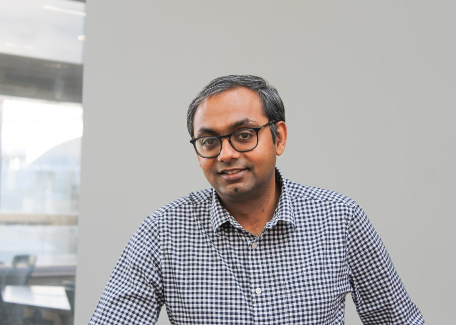

Professor, ECE · University of British Columbia
I lead the Dependable Systems Lab, where we build systems that are reliable, secure, and resilient — from machine-learning accelerators to autonomous vehicles to blockchains. Our work has been adopted by industry (e.g., Intel’s OpenVINO toolkit) and recognized with 12 best-paper awards, the IEEE/IFIP Jean-Claude Laprie Award, and the inaugural IEEE Rising Star in Dependability.
Before UBC, I received my PhD from the University of Illinois at Urbana-Champaign (2009) and spent time as a post-doctoral researcher at Microsoft Research. I have also collaborated with NVIDIA, Intel, IBM, AMD, Google, and Meta.
Karthik Pattabiraman is a Professor of Electrical and Computer Engineering (ECE) at the University of British Columbia (UBC), Canada. He received his PhD (2009) and MS (2004) in Computer Science from the University of Illinois at Urbana-Champaign (UIUC), and his B.Tech. from the University of Madras, India (2001). Before joining UBC in 2010, he was a postdoctoral researcher at Microsoft Research (MSR), Redmond. His research interests span dependable systems, cyber-physical systems, and software security and reliability. He has published over 100 papers and won 12 best paper (or runner-up) awards with his students. His honors include the Jean-Claude Laprie Award in Dependable Computing (2025), the Inaugural Rising Star in Dependability Award (2020), the UBC Killam Award for Excellence in Mentoring (2020), the UBC Killam Faculty Research Prize (2018), the NSERC Discovery Accelerator Supplement (2015), and the William C. Carter PhD Dissertation Award (2008). He is an ACM Distinguished Member, an IEEE Computer Society Distinguished Contributor and Distinguished Visitor, the Vice-Chair of the IEEE Technical Committee on Dependable Computing and Fault Tolerance (TCFT; Chair-elect 2027), a member of the IFIP Working Group 10.4, and a member of the DSN Steering Committee.
Karthik Pattabiraman is a Professor of Electrical and Computer Engineering (ECE) at the University of British Columbia (UBC) in Canada. He received his PhD in 2009 in Computer Science from the University of Illinois at Urbana-Champaign (UIUC), an MS in Computer Science also from UIUC in 2004, and B.Tech. from the University of Madras, India, in 2001. Before joining UBC, he was a post-doctoral researcher at Microsoft Research for a year in 2009. His research interests are in dependable computer systems, software security, cyber-physical systems and software engineering.
Karthik won the Inaugural IEEE Rising Star in Dependability Award in 2020, UIUC CS department’s early career distinguished alumni award in 2018, UBC-wide Killam mentoring excellence award in 2020, UBC-wide Killam Faculty Research Prize in 2018, UBC-wide Killam Faculty Research Fellowship in 2016, NSERC Discovery Accelerator Supplement (DAS) in 2015, and the William Carter Dissertation Award in 2008. Together with his students, he has won twelve best paper (or runner up) awards at venues such as DSN, ICSE, ISSRE, ICST, QRS, etc. His students have won awards such as the SPEC Kaivalya Dixit Distinguished Dissertation award, the William Carter dissertation award in dependability, and the SIGHPC distinguished dissertation award (honorable mention). His research has been funded by companies such as Meta, Google, Intel, AMD, Microsoft, Lockheed Martin, Cisco and Huawei.
Karthik initiated and led the Flikker project at Microsoft Research, which was one of the first papers in the field of what is now known as “approximate computing” or “good enough computing” (a term that he coined) — this paper won the Jean Claude Laprie award in Dependable Computing in 2025. He is listed in the DSN conference hall of fame (in the top 10%). He is a member of the IFIP Working Group 10.4 on Dependable Computing and Fault-tolerance (vice-chair from 2019–2025), Vice chair of the IEEE Technical Committee on Dependable Computing and Fault Tolerance (TC-FT), and serves on the steering committees of DSN and PRDC. He is a Professional Engineer (P.Eng.) in BC, a distinguished visitor and distinguished contributor of the IEEE Computer Society, and a distinguished member of the ACM.
Protecting machine-learning models against hardware faults, faulty training data, and privacy attacks — from DNN accelerators to LLMs. Key Projects: Ranger, LLTFI, DLAFI, ReMIX, HAMP, MembershipTracker.
DSN · ISSRE · SC · NDSS · CCSDetecting and recovering autonomous vehicles and robotic systems from physical-layer attacks such as GPS spoofing and sensor manipulation. Key projects: PID-Piper, SpecGuard, RAVAGE, ARMOR.
DSN · CCS · ICRA · AsiaCCSAutomated vulnerability detection and attack analysis for smart contracts and decentralized finance protocols. Key Projects: SolidiFI, eTainter, AChecker, POMABuster.
IEEE S&P · CCS · ICSE · ISSTAMiddleware and operating systems for heterogeneous edge-to-cloud computing. Key projects: OneOS, ImmunoPlane, Turnstile for IoT privacy.
EuroSys · SEC · IoTDI · Middleware12 best-paper awards at DSN, ICSE, ICST, QRS, EDCC, and others.
Low-cost fault corrector for DNNs via range restriction. Adopted in Intel OpenVINO.
Framework-agnostic fault injection for ML applications at the LLVM IR level.
Distributed operating system for seamless edge-to-cloud computing.
Attack generation engine for discovering physical attacks against robotic autonomous vehicles.
I lead the Dependable Systems Lab. Our alumni have gone on to faculty positions (SFU, U. Florida, UT Arlington, U. Kansas, ETS Montreal) and to research roles at Google, Meta, Microsoft, Amazon, and national labs (PNNL).
Current members: People ·
Alumni: Graduated students & theses
Prospective students: Please read this page before contacting me.
Our research is supported by NSERC, the Department of National Defence (Canada), NRC, and industry partners including NVIDIA, Intel, AMD, Google, Meta, and Microsoft.